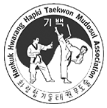

This old Dutch city of cobbled streets,
historic buildings, churches, even grander museums, cosy bars, fine cafes and canals is just a 15 minute train ride from Amsterdam.
To its west are the coastal dunes of the Zuid-Kennemerland National Park and the popular beaches of Zandvoort and Bloemendaal aan Zee.
The surroundings
Haarlem is the perfect place for a one-day trip! You have a great national forest,
followed up with a huge beach(Zandvoort). The city hides many hidden churches inside.
The City Center
A quick glance at the city centre makes it obvious why. Haarlem boasts a magnificent old centre with plenty of monumental buildings.
Grote Houtstraat – the longest shopping street in Haarlem
The Grote Houtstraat is Haarlem’s longest shopping street One of Haarlem's oldest shopping streets,
the Grote Houtstraatand one of the oldest in the city. Running straight through the heart of the pedestrianized zone,
the most interesting part for shopping is between the Grote Markt to where the Grote Houtstraat meets with the Raamvest / Gasthuissinge,Lined with the usual global giants such as the Apple store, Zara, H&M and Esprit, the Grote Houtstraat is also home to the usual Dutch high-street chains like Blokker, Etos, Intertoys, WE Fashion and (of course) there’s an Albert Heijn. However, the Danish Besteller chains, like ONLY, Vero Mode, Name It and Vila also have a strong presence in Haarlem’s high-street. But no matter what you’re after, you should find it in the Grote Houtstraat, seeing as it is the street with the most shops in Haarlem.
Come and enjoy outdoor trainings in the nature of Haarlem. You get fresh air and changing surroundings for free. Sounds good, right? We therefore believe that no training can compete with an outdoor training.
Welcome to the leading martial art school in Haarlem & surroundings!
Regardless of which branch of martial art you choose with us, we always strive for a balanced curriculum full of challenges. The more balanced the challenge, the more fun it is to continue! You can flow in whenever you want, at any level!
Real guidance, focused results
At Fitland we believe in real guidance: you tell us your goal and together we go for it. We continue to motivate you, continuously adjust your training and ensure that fitness remains fun. Because having a goal is fun, but the way to your result is just as important to us.
Register with Five21 and have fun with our fantastic coaches and athletes
while you work on your fitness and strength.Driven, passionate and professional.
TeamFive21 was created after 6 sporty friends who regularly crossFit together came up with the idea to set up their own gym.
Among other things, they share the same passion for CrossFit, for fun and for pleasure in life.
Haarlem-Kennemerland Football Club is een jonge en bloeiende voetbalvereniging, ontstaan in 2010. Wij voetballen op het oude Haarlem-complex aan de Sportweg. Naast het historische stadion bestaat ons terrein uit drie velden (waarvan één kunstgras) omringd door het groen van het Noordersportpark. Wij zijn een ambitieuze voetbalclub.
Kanopolo is a fast, fierce game based on water polo. Kanopolo is played with 5 to 5 players, with goals (from 1 by 1.5 meters) hanging at 2 meters above the water. The game is played both in swimming pools and on open water on a playing field of 35 by 23 meters.
We emphasize a personal approach. Beginners start with us with a good basic workshop. This way you get the attention that 100% is needed for a good and safe start.
The advanced CrossFitter does not train in crowded groups. There is a separate program for each level.
We work with several coaches who all have their own specialist knowledge and background.
Outdoorsports is a combination of endurance training, through running, combined with muscle strengthening exercises. The bootcamp training sessions are challenging for beginners and advanced athletes. You are assured of personal attention and responsible sports. It is the perfect way to improve overall fitness, increase muscle strength and train your coordination.
Our accommodation, which is located on the Vergierdeweg in Haarlem-Noord, is located on a sports complex where three sports clubs are located:
the Schoten football club
the Haarlem Korfbalclub Aurora and
the Hockey Club Haarlem
We have a beautiful, new, own clubhouse there with a large central area and large balcony overlooking the fields.
Our school has existed since 1990 and has become a Korean cultural taekwondo training center in the Netherlands. This center is located in Almere. Over the years, schools have been opened in Hoofddorp, Nieuw Vennep, Almere-Poort, Almere-Buiten, Amsterdam South-East, Utrecht and Haarlem. The school was founded by a Korean grandmaster, grandmaster (Kuen Sabumnim) Y.K. Kim (9th dan taekwondo), who has more than 30 years of experience in teaching this martial art form and training as a taekwondo instructor.

Taekwondo
The Story
Taekwondo is a combative sport and was developed during the 1940s and 1950s by Korean martial artists with experience in martial arts such as karate, Chinese martial arts, and indigenous Korean martial arts traditions such as Taekkyon, Subak, and Gwonbeop.
The oldest governing body for Taekwondo is the Korea Taekwondo Association (KTA), formed in 1959 through a collaborative effort by representatives from the nine original kwans, or martial arts schools, in Korea.